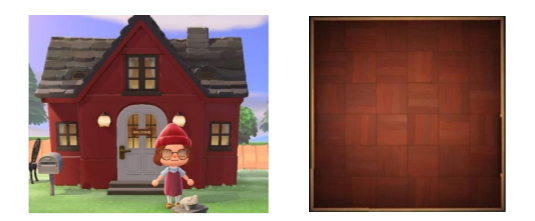

Point du programme abordé : Algorithmes gloutons
Durée : 3h
Animal Crossing : New Horizons est un jeu de type bac à sable sorti sur Nintendo Switch en 2020. Dans ce jeu, le joueur possède une maison qu'il peut décorer avec les objets qu'il fabrique ou trouve tout au long de son aventure, maison que l'on peut découper en 6x6 cases (soit 36 cases), semblable à :
Vous êtes un joueur débutant et possédez de ce fait la liste d'objets suivante :
| Noms | Dimensions | Nombres de cases | Points d'utilité |
| Lit double | 3x3 | 9 | 50 |
| Bureau | 2x3 | 6 | 20 |
| Bibliothèque | 2x3 | 6 | 5 |
| Commode | 2x3 | 6 | 2 |
| Lampe | 2x2 | 4 | 10 |
| Globe terrestre | 2x2 | 4 | 1 |
| Guéridon | 2x2 | 4 | 5 |
| Petite table | 2x2 | 4 | 5 |
| Vase | 2x2 | 4 | 1 |
| Coffre en bois | 2x2 | 4 | 2 |
À chaque objet sont attribuées des dimensions et des points d’utilités.
-> À l’aide des supports physiques à votre disposition, faites des simulations d’aménagement de votre maison.| Nombre de cases vides | Points d'utilités maximum | Nombre de cases vide restantes |
| 36 | ||
. . . . . . . . . . . . . . . . . . . . . . . . . . . . . . . . . . . . . . . . . . . . . . . . . . . . . . . . . . . . . . . . . . . .
. . . . . . . . . . . . . . . . . . . . . . . . . . . . . . . . . . . . . . . . . . . . . . . . . . . . . . . . . . . . . . . . . . . .
| Nombre de cases vides | Points d'utilités maximum | Nombre de cases vide restantes |
. . . . . . . . . . . . . . . . . . . . . . . . . . . . . . . . . . . . . . . . . . . . . . . . . . . . . . . . . . . . . . . . . . . .
Nous voulons implémenter un algorithme qui permet de déterminer cette solution.
. . . . . . . . . . . . . . . . . . . . . . . . . . . . . . . . . . . . . . . . . . . . . . . . . . . . . . . . . . . . . . . . . . . .
. . . . . . . . . . . . . . . . . . . . . . . . . . . . . . . . . . . . . . . . . . . . . . . . . . . . . . . . . . . . . . . . . . . .
-> Soit les fonctions suivantes : Vous trouverez ici un fichier python.. . . . . . . . . . . . . . . . . . . . . . . . . . . . . . . . . . . . . . . . . . . . . . . . . . . . . . . . . . . . . . . . . . . .
. . . . . . . . . . . . . . . . . . . . . . . . . . . . . . . . . . . . . . . . . . . . . . . . . . . . . . . . . . . . . . . . . . . .
. . . . . . . . . . . . . . . . . . . . . . . . . . . . . . . . . . . . . . . . . . . . . . . . . . . . . . . . . . . . . . . . . . . .
Nous souhaitons aménager une seconde pièce de notre maison ayant pour dimensions 4x5 cases, nous avons décidé de faire une cuisine, pour cela nous possédons la liste d’objets suivante :
| Noms | Dimensions | Nombres de cases | Points d'utilité |
| Four | 1x2 | 2 | 20 |
| Placard | 1x2 | 2 | 20 |
| Lave-vaisselle | 1x2 | 2 | 10 |
| Réfrigérateur | 1x2 | 2 | 30 |
| Plaque électrique | 1x2 | 2 | 30 |
| Table | 3x3 | 9 | 50 |
| Evier | 2x2 | 4 | 30 |
| Micro - ondes | 1x2 | 2 | 30 |
| Cafetière | 1x2 | 2 | 20 |
| Plante | 1x2 | 2 | 5 |
. . . . . . . . . . . . . . . . . . . . . . . . . . . . . . . . . . . . . . . . . . . . . . . . . . . . . . . . . . . . . . . . . . . .
Résultat obtenu :
. . . . . . . . . . . . . . . . . . . . . . . . . . . . . . . . . . . . . . . . . . . . . . . . . . . . . . . . . . . . . . . . . . . .
. . . . . . . . . . . . . . . . . . . . . . . . . . . . . . . . . . . . . . . . . . . . . . . . . . . . . . . . . . . . . . . . . . . .
Nota bene :Dans ce TP, nous avons réfléchi et mis en œuvre une stratégie afin d’optimiser le nombre de points d’utilités. Nous avons convenu de choisir à chaque fois l’objet possédant le plus de points d’utilités pouvant être placé dans la surface disponible. Cette stratégie met en œuvre une succession de choix optimaux locaux sur des problèmes de plus en plus petits. Le nom officiel de la famille d’algorithmes utilisant cette stratégie est Algorithme glouton.
DéfinitionOptimiser un problème, c’est déterminer la solution répondant à une caractéristique spécifique. Par exemple, déterminer le minimum ou le maximum d’une fonction est un problème d’optimisation. Optimiser le problème de ce TP, est trouver l’ensemble de objets visant à maximiser le nombre de points d’utilités pour une surface donnée.